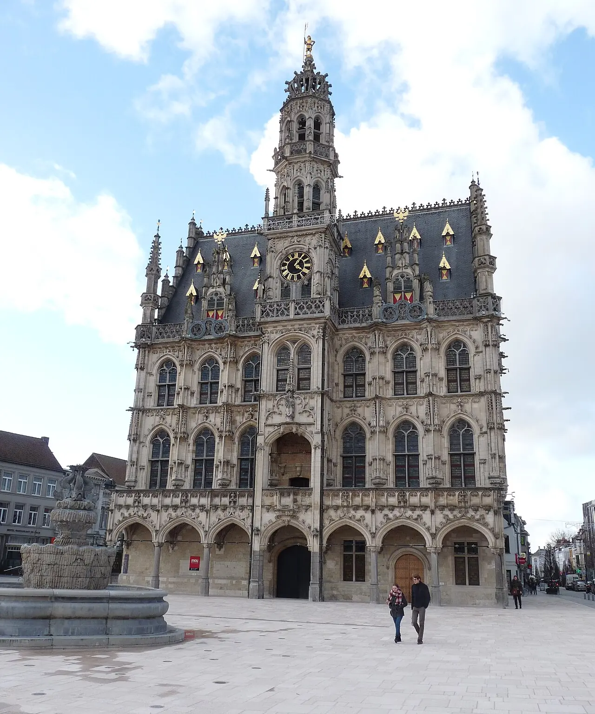
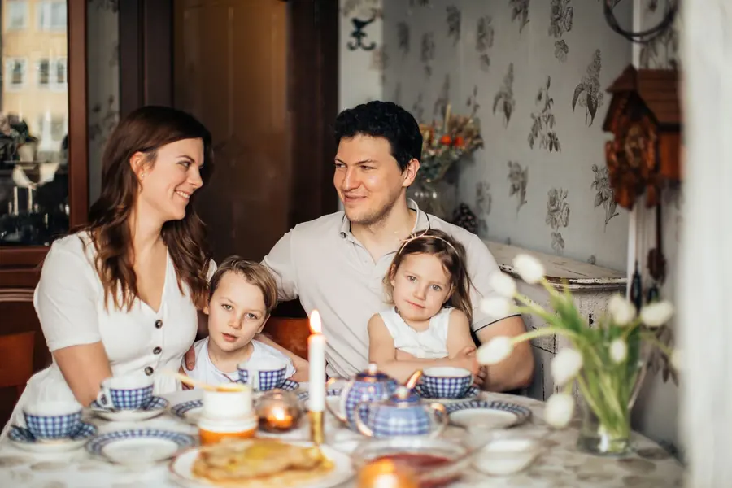
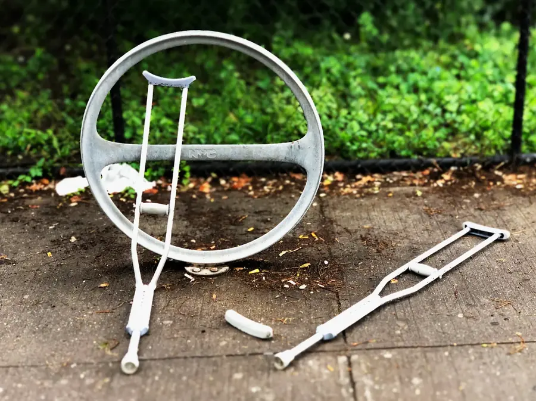
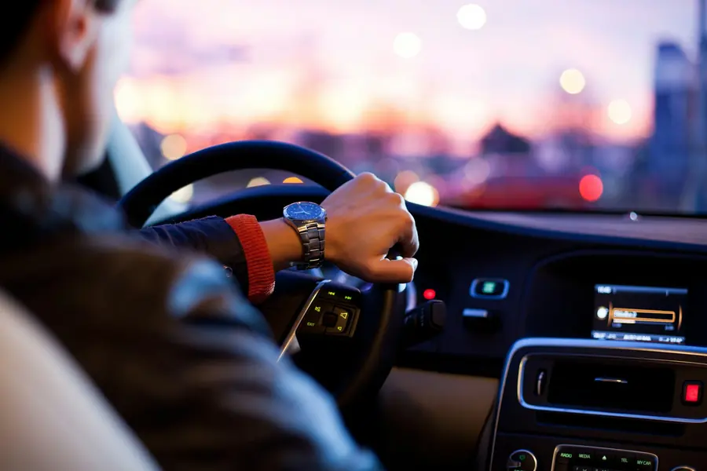
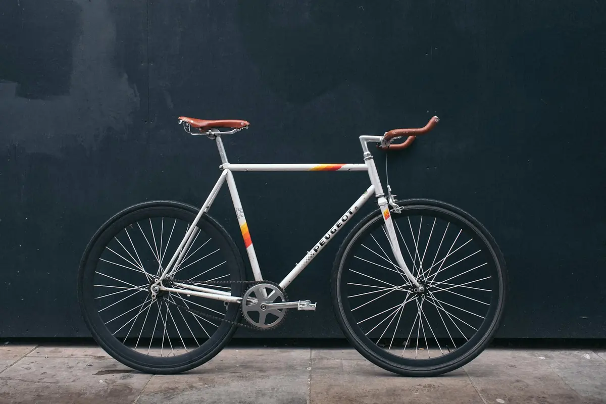
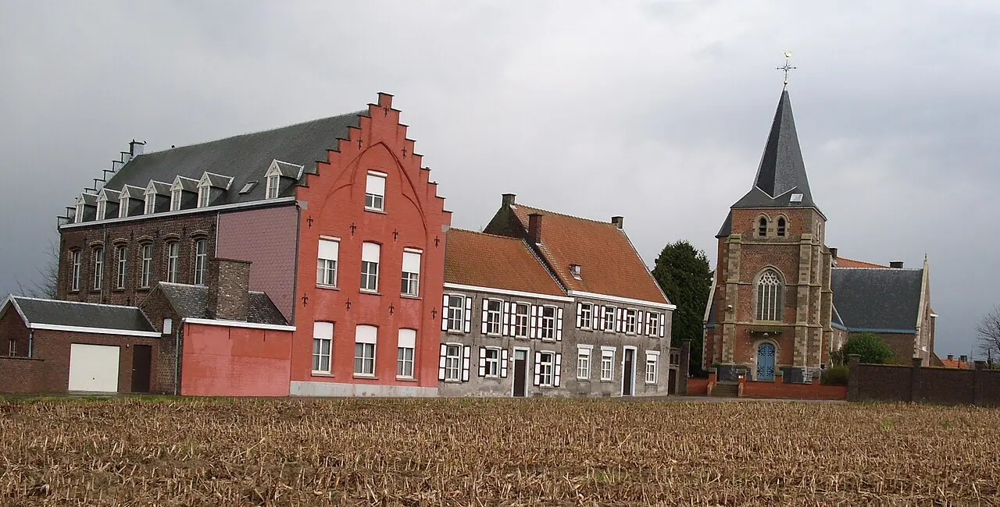
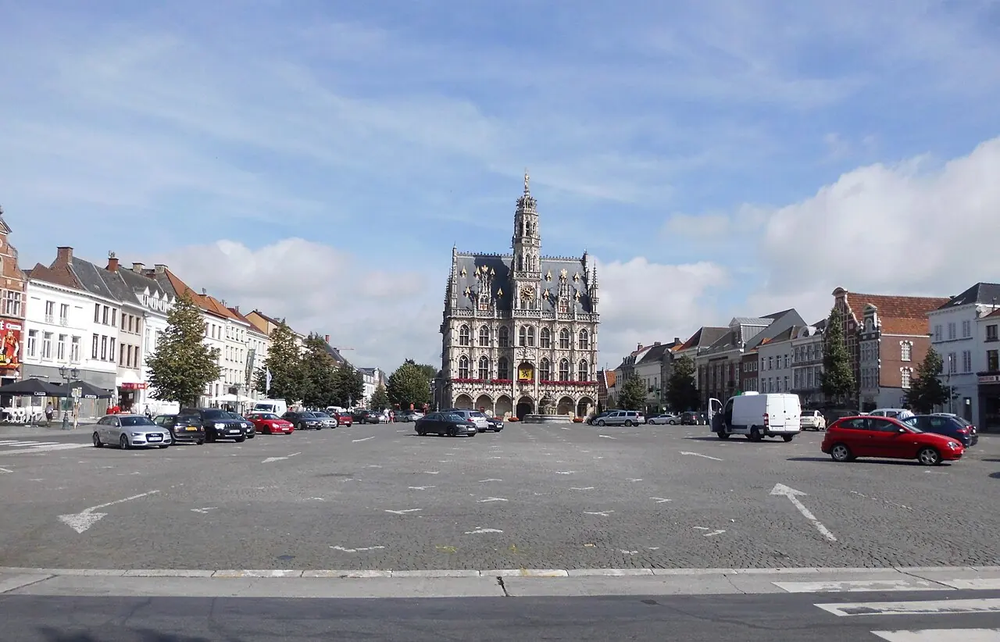

Recht voor wat u thuis en onderweg overkomt.
Een ongeval, een verzekeraar die niet wil betalen, een huurconflict of een familiezaak. Ik ben Ilse Bothuyne, advocaat aan de balie van Oudenaarde. U legt het mij één keer uit, en u hoort duidelijk wat er mogelijk is.

- Personenrecht
- Aansprakelijkheid
- Verzekeringen
- Verkeer
- Huur
Waarvoor u bij mij terechtkunt
Vijf domeinen die vaak samen opduiken. Een ongeval wordt al snel een zaak over aansprakelijkheid en verzekering. Kies wat bij u past, dan staat het al in het formulier.

1Personenrecht
Echtscheiding, afspraken over de kinderen, onderhoudsgeld en wat er verder bij u als persoon en als gezin hoort.
Vraag hierover
2Aansprakelijkheid
Iemand anders veroorzaakte schade, of u wordt zelf aangesproken. Wie draagt de gevolgen, en voor welk bedrag?
Vraag hierover 3
3Verzekeringen
Een schade die geweigerd wordt of een vergoeding die te laag lijkt. Ik lees de polis met u na.
Vraag hierover
4Verkeer
Een aanrijding, letsel na een ongeval of een overtreding. Als bestuurder, passagier, fietser of voetganger.
Na een ongeval 5
5Huur
Woninghuur en handelshuur. Een waarborg die niet terugkomt, achterstallige huur of een opzeg die niet klopt.
Vraag hieroverWat nu, na de klap?
Wie net een ongeval had, denkt zelden aan papieren. Toch maakt wat u de eerste dagen bijhoudt later vaak het verschil. Duid aan wie u was bij het ongeval.

Fietsers en voetgangers hebben extra beschermingIk was bij het ongeval
Als fietser bent u een zwakke weggebruiker
Raakt een motorvoertuig u, dan vergoedt de verzekeraar van dat voertuig in principe uw lichamelijke schade. Ook als u zelf een fout maakte.
Houd dit bij
Algemene uitleg, geen advies voor uw zaak. Elk ongeval is anders.

Ik ben Ilse
Ik ben advocaat aan de balie van Oudenaarde, met mijn kantoor in de Stuivegemstraat in Edelare. Ik werk rond wat mensen in hun dagelijkse leven overkomt: een familiezaak, een ongeval, een schade die de verzekering niet wil vergoeden of een conflict met de verhuurder.
U spreekt telkens met mij. Ik neem de tijd om uw verhaal te horen en zeg u eerlijk wat haalbaar is, ook als het antwoord is dat een procedure niet de moeite loont.
Zo verloopt een eerste gesprek
Een eerste gesprek is er om te begrijpen wat er speelt. Daarna beslist u zelf of u verder gaat.
Kort wat er gebeurd is. Samen kiezen we een moment om langs te komen in Edelare.
Breng mee wat u hebt: brieven, contracten, de polis, foto's. We overlopen alles rustig, in gewone taal.
Welke stappen er zijn, wat ze vragen en wat u zelf al kunt doen. Dan beslist u.
Rechtsbijstandsverzekering? U kiest zelf uw advocaat.
Veel gezinnen hebben er een, vaak gekoppeld aan de familiale of de autoverzekering. Komt het tot een procedure, dan hebt u wettelijk het recht om zelf uw advocaat te kiezen.
Breng uw polis mee naar het eerste gesprek. Dan bekijken we samen wat ze dekt.
Iedereen die een review naliet, gaf vijf sterren. Lees ze gerust voor u belt.
Bekijk op GoogleTussen de Markt en de Edelareberg

- Markt van Oudenaarde± 1 km
- Edelareberg± 1 km
- GesprekkenOp afspraak
Wat mensen vaak vragen
Staat uw vraag er niet tussen? Bel gerust naar 0477 73 83 34.
Ja. Zodra er een gerechtelijke procedure nodig is, mag u zelf uw advocaat kiezen. De verzekeraar betaalt dan binnen de grenzen van uw polis. Breng de polis mee, dan bekijken we wat ze dekt.
Vaak wel. Een weigering steunt meestal op één clausule in de voorwaarden. Breng de polis en de brieven van de verzekeraar mee, dan lees ik ze met u na.
Als zwakke weggebruiker wordt uw lichamelijke schade in principe vergoed door de verzekeraar van het motorvoertuig, ook als u zelf in fout was. Houd uw medische attesten en rekeningen goed bij.
Breng uw huurcontract, de plaatsbeschrijving bij het begin en het einde van de huur en de briefwisseling mee. Daarmee is al snel duidelijk of de verhuurder de waarborg mag inhouden.
Alles wat met u als persoon en met uw familie te maken heeft: een echtscheiding, het verblijf van de kinderen, onderhoudsgeld en afstamming.
Vraag het gerust bij uw eerste telefoontje. Een advocaat moet u vooraf uitleggen hoe het ereloon berekend wordt, zodat u weet waar u aan toe bent.
Een afspraak in Edelare
Stuivegemstraat 69700 Oudenaarde (Edelare)